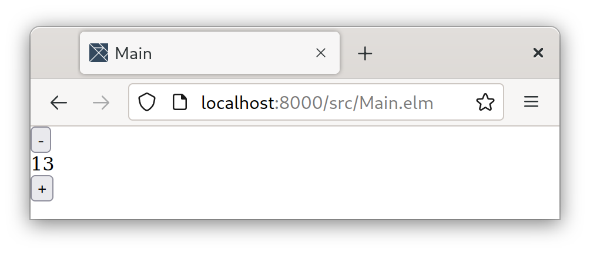

Introduction
Lets create a simple web app that lets a user increment and decrement an number. We will use Unison to create a backend service and use Elm to create a frontend service.

Screenshot of the Web App
What is Unison?
Unison, as the website puts it, is a language “from the future”. It departs from the conventional file based programming and instead stores all the code into a single hash table. This allows you to reference any code ever written by the hash of the code.
This novel code storage paradigm simplifies a great deal of hard problems in computer science, including distributed computing, durable stoarge, dependency managamgnet, refactoring, and more the longer you think on it. More information, and just how these problems are simplified can be found on the Unison website and its big ideas page.
We will use Unison as our backend language
What is Elm?
Elm is a better known functionall programming language used for frontend development It has a Haskell like look. You can find more information on its offcial website.
We will Elm as our frontend language.
Why Unison and Elm?
Both Unison and Elm have a ML look and neither Haskell-like typeclasses. I can’t find an explaination of why Elm doesn’t have typeclasses (only this). Between this post and this post the Unison developers explain how typeclasses create a global cohereance. Requiring global cohereance for Unison would be compromising the flexility it’s code storage model. Edward Kmett has a good presentation of this global coherance problem on YouTube. And Gabriella Gonzalez wrote the infamous “Scrap your type classes” bashing Haskell type classes for a variety of reasons.
In my experience, typeclasses are easier then the alternative of having List.map, Map.map, Tree.map, etc. Admittedly, most of my FP experience is limited to Haskell, but I at least want to be able to choose which level of abstraction I’m working on, and not be prescribed to only work on concrete data types. And I like how typeclasses let me do this. But Unison’s choice to not have them makes a ton of sense.
Maybe my narrow focus on Haskell has kept my mind shut from other idea, but I believe marrying Haskell typeclasses with Unison code base would make the worlds best programming language. But, to my knowledge, no one has cracked this problem. If someone can point me to the latest (and foundational) research on typeclasses and this global coherence issue, that would be appricited. Now, Let us go on a write our Unison backend.
Create Our Unison Backend
Our backend will know three routes: the "/" route will request the counter’s state; the "/increment" route will increment the couter’s state by one; and the "/decrement" route will decrement the coutner’s state by one. The backend will also save the counter to a counter.ubin file after every request.
First, let us install the necessary dependencies to start writing our backend.
Installing http, logging, and file Libraries in Unison Codebase Manager (UCM)
To create the server we will need the Unison http library. However, the library isn’t set up for us to use custom abilities in the request handler, so instead we need this branch I made (this could change tomorrow! Unison’s http library is still in the works!). To download my branch of the http library run the following in ucm
.> pull luketollefson.public.prs._genericRequestHandler lib._genericRequestHandlerWe will also need the logging library for logging and the file library for file-based IO.
.> pull stew.public.projects.logging.latest lib.logging
.> pull git(https://github.com/unisonweb/share).chrispenner.file lib.file The Web Service Function serveWeb
serveWeb : '{IO, Exception} ()
serveWeb _ =
durableStorage = FilePath "counter.ubin"
initialState = -- 1) Initialize counter
Either.fold (const 0) id (Exception.catch '(readDurable durableStorage))
run =
host = HostName "127.0.0.1"
port = ServiceName "5556"
saveAfter r = -- 2) Save counter after request
res = handleRequest r
saveStore durableStorage
res
requestHandler = RequestHandler saveAfter
server host port requestHandler
unsafeRun! -- 3) Run the server
('handle (Store.withInitialValue initialState run)
with Log.default "Example Web App")In serveWeb we define our server’s “main” function. This function will be ran with run serveWeb in UCM. At comment #1 we initalize the counter for our runtime. When counter.ubin exists we set initialState to the value within it, otherwise our initialState will be 0. At comment #2 we wrap our request handler handleRequest in code that saves our counter into durable storage after every request. In comment #3 we actually run the server function run.
The Request Handler handleRequest
Broadly, a backend service will take in a request and emit back a response to a client. So we can think of our service as function from a request to a response, written as a type this is SimpleHttpRequest ->{g} SimpleHttpResponse where {g} allows us to tag any ability in the function. In our case, handleRequest is our handler and it looks like this:
handleRequest : SimpleHttpRequest ->{Store Nat} SimpleHttpResponse
handleRequest req =
(RequestURI (Path p) _ _) = requestURI req -- Get the path p
match p with
"/" ->
set cors (okText (Nat.toText Store.get)) -- Return the counter
"/increment" ->
Store.modify (n -> n + 1) -- Increment counter
set cors (ok Bytes.empty) -- Return nothing
"/decrement" ->
Store.modify (n -> n - 1) -- Decrement counter
set cors (ok Bytes.empty) -- Return nothing
_ ->
-- Return a bad request
SimpleHttpResponse cors BadRequest (RawResponseBody Bytes.empty)
cors : [Header]
cors = [Header "Access-Control-Allow-Origin" "*"]In handleRequest we first destruct the request URI’s path into p. Then we pattern match for "/", "/increment", "/decrement" or _. If we match "/" we will return the counter. If "/increment" or "/decrement" are matched we will increment or decrement the counter respectivly and return an empty response. All other p match the _ case and return a error response.
Additionally, we define cors which fixes a CORS error. Setting Access-Control-Allow-Origin=* is bad practice, but for us it is simple enough for us.
Durable Storage
In the saveAfter definition of the serveWeb function we use the saveStore function. The saveStore function will save whatever in the store ability to durable storage, it is defined as
saveStore : FilePath ->{IO, Exception, Store a} ()
saveStore path = writeDurable path (Store.get)One of the attractive parts of Unison is how easy durable storage should be. In theory, we should always be able to sensibly read data we have written since we have a full repository of all the data types that have been created. Maybe Unison will slay the SQL zombie? Though admittedly, it is hard to find documentation for it—I found the following works alright
readDurable : FilePath ->{IO, Exception} a
readDurable path =
throwLoad a = Throw.toBug '(Either.toThrow (Value.load a))
throwDeserialize b = Throw.toBug '(Either.toThrow (Value.deserialize b))
throwLoad (throwDeserialize (file.bytes.readFile path))
writeDurable : FilePath -> a ->{IO, Exception} ()
writeDurable path v =
file.bytes.writeFile path (Value.serialize (Value.value v))The function readDurable will give back and a from a particular FilePath. The helpers throwLoad and throwDeserialized basically serve to get Value.load, Value.deserialize, and file.bytes.readFile to compose nicely.
The function writeDurable will write a to a particular FilePath.
Playing with the Unison Backend without a Frontend
In ucm run run serveWeb and browse to localhost:5556. You’ll see the number zero, and if you go to localhost:5556/increment or localhost:5556/decrement the counter will be incremented or decremented the next time you go to localhost:5556.
You can restart the backend and the old counter will be loaded from counter.ubin. Though, in order to restart the backend you might have to change the port number. The port isn’t properly unbound when you stop the server.
The Elm Frontend
I won’t dive into the Elm code. The code isn’t nearly as novel as the backend Unison code. If you can get through the Official Elm Guide things should be easy to understand. After running the code you will see a the counter’s value and buttons to increment and decrement it.
Conclusion
Even this toy example isn’t perfect, but I feel like it serves a good introduction to the possibility of using Unison as a backend language. Unison is a compelling language and the developer know what they are doing. I highly recommend giving the language a shot. Also, the compiler itself is written beautiful.
Dissolving the Frontend-Backend Separation?
We might be able to reach for something higher than simply a Unison backend. I beleive the frontend-backend separation is an arbitrary separation and we should instead express this in a single expression. I’m not the only one who thinks this, Hyperfiddle seems like the best relization of this idea, and this blog post goes into the philosphy of this.
I’m also have my own thing going on here in Haskell called handshake to model client-server relationships. Unfortunately, I’m unsure if you can send higher-order functions over a wire in Haskell, this is where Unison shines. We’ll see where my thing goes.
If Unison compiled to JS we might be able to dissolve the frontend-backend separation and write everything in Unison—who knows.
Full Unison Source Code
serveWeb : '{IO, Exception} ()
serveWeb _ =
durableStorage = FilePath "counter.ubin"
initialState =
Either.fold (const 0) id (Exception.catch '(readDurable durableStorage))
run =
host = HostName "127.0.0.1"
port = ServiceName "5556"
saveAfter r =
res = handleRequest r
saveStore durableStorage
res
requestHandler = RequestHandler saveAfter
server host port requestHandler
unsafeRun!
('handle (Store.withInitialValue initialState run)
with Log.default "Example Web App")
handleRequest : SimpleHttpRequest ->{Store Nat} SimpleHttpResponse
handleRequest req =
(RequestURI (Path p) _ _) = requestURI req
match p with
"/" ->
set cors (okText (Nat.toText Store.get))
"/increment" ->
Store.modify (n -> n + 1)
set cors (ok Bytes.empty)
"/decrement" ->
Store.modify (n -> n - 1)
set cors (ok Bytes.empty)
_ ->
-- Return a bad request
SimpleHttpResponse cors BadRequest (RawResponseBody Bytes.empty)
cors : [Header]
cors = [Header "Access-Control-Allow-Origin" "*"]
saveStore : FilePath ->{IO, Exception, Store a} ()
saveStore path = writeDurable path (Store.get)
readDurable : FilePath ->{IO, Exception} a
readDurable path =
throwLoad a = Throw.toBug '(Either.toThrow (Value.load a))
throwDeserialize b = Throw.toBug '(Either.toThrow (Value.deserialize b))
throwLoad (throwDeserialize (file.bytes.readFile path))
writeDurable : FilePath -> a ->{IO, Exception} ()
writeDurable path v =
file.bytes.writeFile path (Value.serialize (Value.value v))Full Elm Source Code
module Main exposing (..)
import Browser
import Html exposing (Html, button, div, text, pre)
import Http
import Html.Events exposing (onClick)
-- MAIN
main =
Browser.element
{ init = init
, update = update
, subscriptions = \_ -> Sub.none
, view = view
}
-- MODEL
type Model
= Failure String
| Loading
| Success String
init : () -> (Model, Cmd Msg)
init _ =
( Loading
, getNumber
)
-- UPDATE
type Msg
= GotString (Result Http.Error String)
| Change (Result Http.Error ())
| Increment
| Decrement
update : Msg -> Model -> (Model, Cmd Msg)
update msg model =
case msg of
GotString (Ok n) ->
(Success n, Cmd.none)
GotString (Err e) ->
(Failure (errorToString e), Cmd.none)
Change (Ok ()) ->
(Loading, getNumber)
Change (Err e) ->
(Failure (errorToString e), Cmd.none)
Increment ->
(Loading, incNumber)
Decrement ->
(Loading, decNumber)
-- VIEW
view : Model -> Html Msg
view model =
let
number =
case model of
Failure e ->
e
Loading ->
"Loading..."
Success n ->
n
in
div []
[ button [ onClick Decrement ] [ text "-" ]
, div [] [ text number ]
, button [ onClick Increment ] [ text "+" ]
]
-- HELPERS
localhost : String
localhost = "http://localhost:5556"
getNumber : Cmd Msg
getNumber =
Http.get
{ url = localhost ++ "/"
, expect = Http.expectString GotString
}
incNumber : Cmd Msg
incNumber =
Http.post
{ url = localhost ++ "/increment"
, body = Http.emptyBody
, expect = Http.expectWhatever Change
}
decNumber : Cmd Msg
decNumber =
Http.post
{ url = localhost ++ "/decrement"
, body = Http.emptyBody
, expect = Http.expectWhatever Change
}
errorToString : Http.Error -> String
errorToString e =
case e of
Http.BadUrl s -> "BadUrl " ++ s
Http.Timeout -> "Timeout"
Http.NetworkError -> "NetworkError"
Http.BadStatus i -> "BadStatus " ++ String.fromInt i
Http.BadBody s -> "BadBody " ++ s